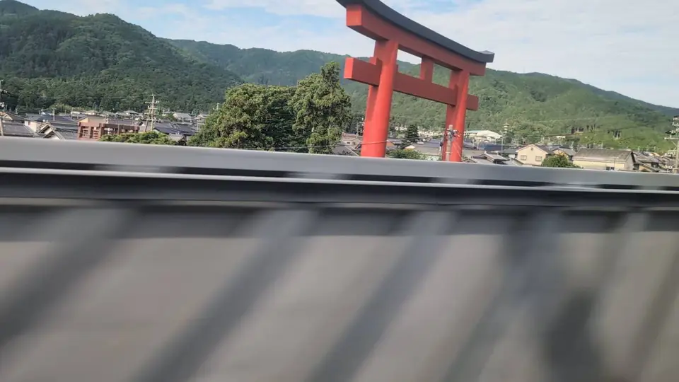
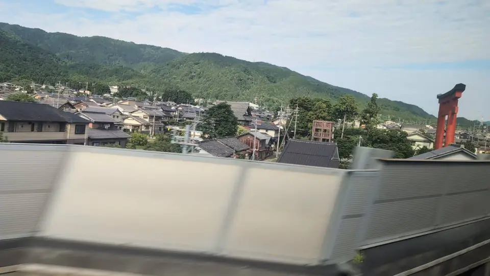

- 見える区間
- 岐阜羽島 → 米原
- 座席側
- A席・海側
- タイミング
- 東京発のぞみ基準で約107分後
- 写真
- 2 枚
南宮大社ってどんな神社？
南宮大社（なんぐうたいしゃ）は、岐阜県不破郡垂井町に鎮座する古社で、旧美濃国の一の宮です。ご祭神は金山彦命（かなやまひこのみこと）。日本神話ではイザナミの傷から生まれた神とされ、鉱山・鍛冶・金属加工を司る神として、古くから鉄鋼・金属関係者の信仰を集めてきました。全国に3,000社以上あるとも言われる鉱山・金属関連の神社の総本社的存在で、現在も金属工業関連の企業や職人からの崇敬を集めています。関ヶ原の戦い（1600年）で社殿の多くが焼失した後、江戸幕府三代将軍・徳川家光の寄進によって再建された朱塗の本殿・拝殿・楼門などは、国の重要文化財に指定されています。
もっと見る: 南宮大社 公式Wikipedia: 南宮大社
東京から新大阪方面なら岐阜羽島を出たあと、新大阪から東京方面なら米原を出て関ヶ原を越えたあと、A席側を見てください。
あの大鳥居は、実はどれくらい大きい？
新幹線から見える朱の鳥居は、南宮大社の一の鳥居（大鳥居）で、県道を跨ぐ形で立っています。石造・鉄骨造の大鳥居としては国内屈指の高さで、地元資料では高さ約21m、幅約28mと紹介されます。周辺は田園と低い住宅が広がる場所なので、実際の大きさ以上に「ぽつんと現れる巨大な赤」の印象が強く残ります。
この鳥居から本殿までは約1km。車窓から社殿そのものは見えませんが、大鳥居は本殿へ続く参道の入口を告げるシンボルとして機能しています。周辺には旧中山道の垂井宿があり、江戸時代の街道と、金山彦を祀る美濃国一の宮が並び立つ場所として整えられてきました。
参拝すると、朱の楼門、山を背にした社殿、金属関係の奉納品、そして境内の金山神社（金物職人の信仰）など、金属をキーワードにした独自の空気を感じられます。新幹線から鳥居しか見えないのが少しもったいないくらいの神社です。
位置の目安
地図をひらくスポット位置と、新幹線から見る位置を切り替えられます。
南宮大社の大鳥居を見逃さないコツ
1. 先に見る方向を決める
岐阜羽島 → 米原が近づいたら、A席・海側の窓を先に意識してください。現在地から追う場合はライブガイド、事前に確認する場合はこのページの地図が役立ちます。
はっきり見えるのは1〜2秒ほど。ライブガイドの案内が出たら、先に窓へ目を移しておくのが現実的です。
2. 見どころ
岐阜羽島を出て関ヶ原方向へ進む区間、A席側の田園の向こうを注意してみてください。真っ赤な柱が田畑の背後にぬっと立ち上がる瞬間があります。周りの低い景色との対比で見つけやすく、「あれ、大きい鳥居あった！」と驚く人が多いスポットです。
写真で見る南宮大社の大鳥居
